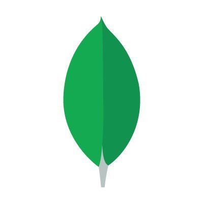

Bienvenue dans les aventures de ………
Zina Ayari
Et si....
Je vous emmenais avec moi vivre le début d'une folle aventure....
Tout commence un mercredi 17 février 2021, par un emboarding chez les Artistes Sans Frontières, avec Helga (CTO), en tant que stagiaire, développeuse web & web mobile 'junior', une aventure qui va durer environ 6 mois (jusqu'au 17 août 2021). Je finis tout juste 5 mois de formation, orchestrée par Social Builder et Konexio, vous y trouverez, au fil des semaines, les créations, réalisées en équipe ou en solo!